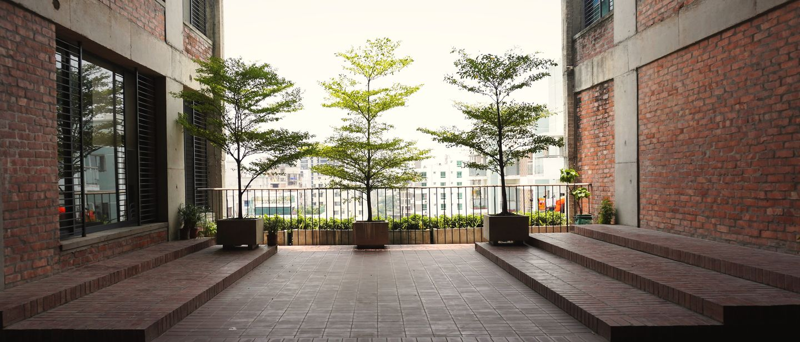
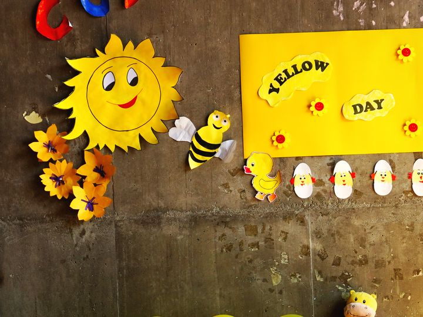
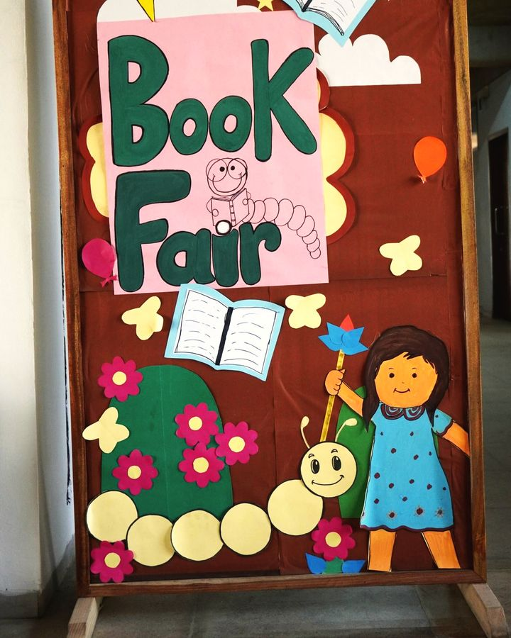
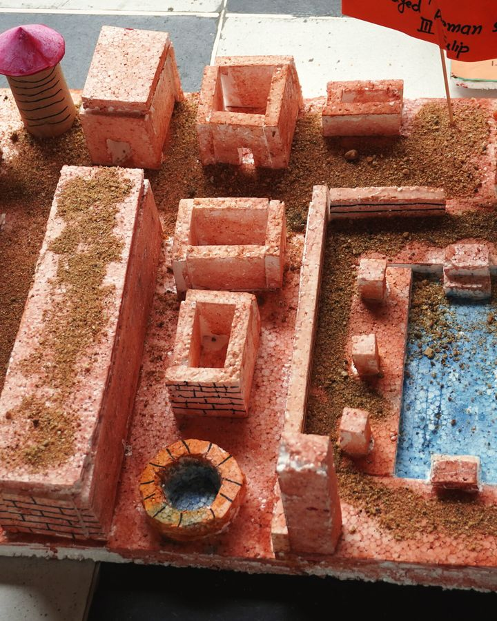
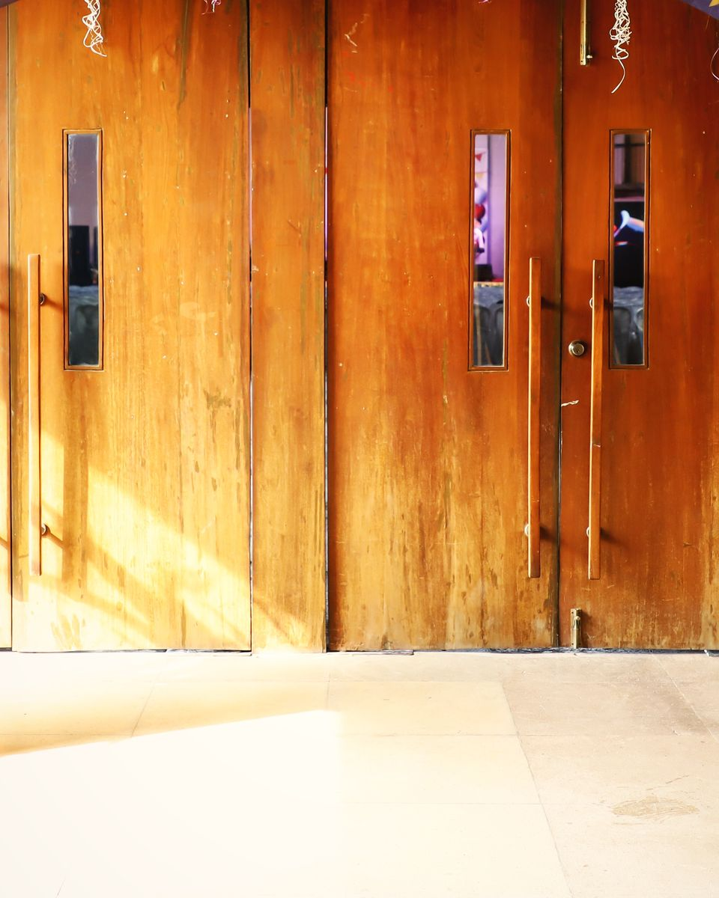
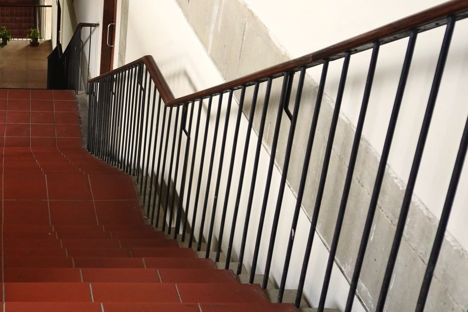
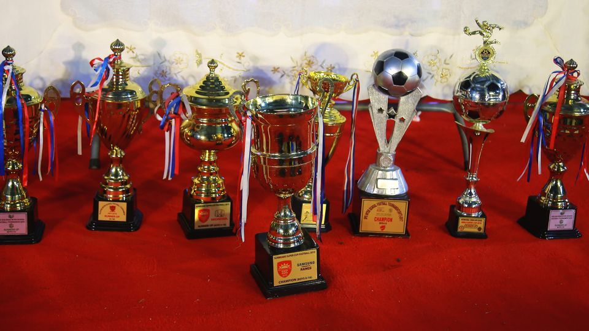
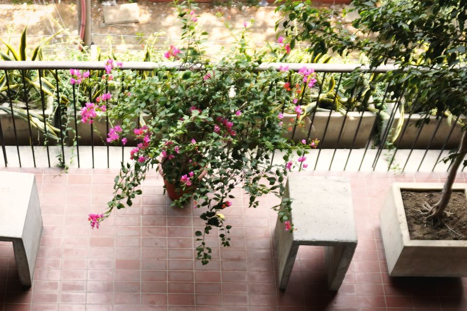

O Level
May–June 2026
67 in every 100 O Level grades were A* or A. Almost one in three was an A*.
- A*32%
- A35%
- B19%
- C10%
- Others4%
One Cambridge curriculum from Playgroup to Class XII, in four stages. Two semesters a year, Cambridge O Level, AS and A Level at the end, all on one campus in Dhaka.

From the school's academics and history pages, and its results summary for the May–June 2026 exam session.
Sixteen classes in four stages, one building, one curriculum. The stage names below open each stage's own page.
O Level · AS · A Level
Playpen teaches the Cambridge curriculum from its Elementary stage up to the Senior stage, where students prepare for Cambridge O Level, AS and A Level examinations. A child who joins in Playgroup can stay until the end of school, in one building and under one curriculum.
English is the language of instruction throughout. Bengali is taught as well, and the school says it puts weight on preserving the Bengali language and on knowing Bangladesh's cultural heritage.
Each school year has two semesters, and a written examination ends each of them. Examinations and reporting explains how that works.
Learning spaces on the campus

01
Playgroup, Nursery, KG I, KG II
The first years at school. Children join after a simple assessment, and wear casual clothes until KG I.

02
Classes I to III
Children join after a short written test in English, Bengali and Mathematics and an interview with the Principal. Library lessons for every class.

03
Classes IV to VII
Two semesters a year, each ending with an exam. Passing the year depends on the main subjects.

04
Classes VIII to XII
Students choose their O Level subjects in Class VIII and sit at least six. At AS and A Level they take at least three. A Level has been taught here since 2013.
AS and A Level, within the Senior stage, has a page of its own: entry is in Class XI, on the school's mock examinations and the O Level result.
The ring shows how the O Level grades were shared out. The three lines are the headline for each level; the Results page has the full picture.
May–June 2026
67 in every 100 O Level grades were A* or A. Almost one in three was an A*.
Exams at home
Since 2020 the school has been a Cambridge exam venue, approved by the British Council. Students sit their exams in the school's own hall.
The Results page has all three rings, the grade splits and the subjects taught at each level.
From the school's results summary for the May–June 2026 exam session. "Others" means all grades below C (below c at AS Level).
From the school's history page, which gives both dates; the school confirms what each marks.
After O Level
Students who finish O Level can go on to AS and A Level. At A Level a student takes at least three subjects. Admission to Class XI is based on the school's mock examinations and the O Level result.



Admissions
Call the line for your child's section first; the office confirms the day. Ask to see the stage your child would join.